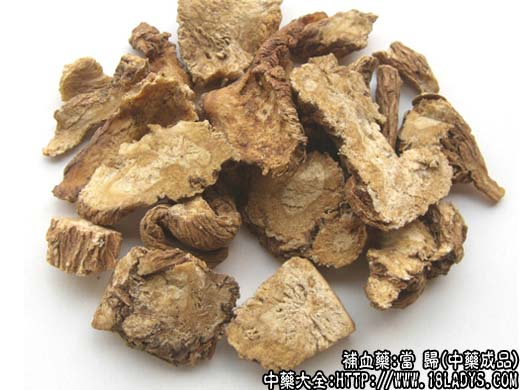
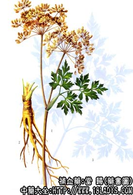

原文连接:https://www.daquan.com/post/2254.html



当归为常用中药。始载《神农本草经》，列为中品。
别名：秦归、西归。
来源：为伞形科多年生草本植物当归的干燥根。栽培品。
产地：主产于甘肃岷县、宕昌、武都、西和、礼县、武山等地；此外，云南、四川、陕西、湖北、贵州等地也有生产。
性状鉴别：本品主根呈圆柱形或圆锥形，下部有支根数条至十余条，略扭曲。全长10～25厘米，主根长2～7厘米，直径2～3厘米，顶端直径有时可达3.5厘米。支根上端直径1厘米左右，尾端渐细。顶端基痕明显，微凸或平坦，常有基叶残留。表皮棕褐色或淡褐色，主根上端有不甚明显的环形皱纹，全体有紧密的纵皱及微突起的皮孔。体坚硬，吸潮后软韧横断面黄白色或淡黄棕色，具射线状纹理，习称“菊花心”，形成层深棕色，环状。木质部及韧皮部有多数细小裂隙和黄棕色分泌腔，中心有时有白色髓心。气特异芳香，味微苦而稍苦辛。
以主根粗长，支根少粗壮，表面黄褐色，断面粉白色或淡黄白色者为佳。
主要成分：含挥发油和一种能兴奋子宫的成分；又含蔗糖、维生素B12等。
当归的功效与作用
功效与作用：补血、行血、润肠、调经。
1、调整子宫功能状态。动物实验证实，当子宫处于内加压状态时，当归对子宫有兴奋作用，使子宫内收缩由不规则变为规则，收缩力加强；当子宫内不加压时，当归对子宫有抑制作用。
2、镇静、镇痛。有效成分为挥发油。
3、利尿。有效成分为蔗糖。
4、抗维生素E缺乏症。
5、抗菌作用。体外试验对痢疾杆菌、伤寒杆菌、大肠杆菌、溶血性链球菌等有抑制作用。
炮制：切片生用或酒炒、土炒、炒炭用。
性味：甘、苦、辛、温。
归经：入心、肝、脾经。
功能：补血、活血、调经、润燥、滑肠。
主治：月经不调，血虚或血瘀经闭，经痛崩漏，跌打损伤，痈疽肿痛，风湿痹痛，血虚便闭等症。
临床应用：当归为中医临床用得最多的中药之一。凡需养血通脉，无论属血证、虚证、表证和痈疡，都可用当归。
1、为妇科要药，主要用于调经，对痛经也确有较好疗效，配白芍和延胡索等，此外，也治经闭、月经不调。总之，各种调经方剂离不开一味当归，取其有行血、镇痛作用（或加强子宫收缩而排出瘀血，或弛缓子宫痉挛而镇痛），配熟地、川芎、白芍即四物汤。为理血基本方，不但血虚者可用，凡月经不调以及胎前产后的各种证候，一般也可在此方基础上加减用药。
2、用于养血。对心血虚之心悸、健忘、失眠、心神不宁等，用当归养血以安神，方如当归补血汤；对脾血虚所致的消瘦、萎黄，用当归养血以健脾，方如四物汤；对肝血虚所致的头晕、目眩、耳鸣、筋孪等，用当归养血以柔肝，方如一贯煎。
3、用于治疗肢体瘀血，尤其跌打损伤和血管疾患引起的血瘀或血流不畅、肿胀所痛，当归有逐瘀作用（改善循环和镇痛），故跌打方剂和治血栓闭塞性脉管炎的方剂中常用当归。
4、用于治疗腹痛，对气血瘀滞而兼虚寒的腹痛较适宜，如偏于虚寒（例如产后腹痛），配建中汤加强温中止痛作用，方如当归建中汤，也可用当归生姜羊肉汤；如偏于瘀滞（例如痢疾早期之下痢脓血兼腹痛或妇女便秘腹痛），配白芍、香附等，有活血镇痛作用，方如当归芍药散加味。
5、用于治疗慢性痈疡，取其有活血、补血和止痛作用，改善循环，加强身体抵抗力，常配黄芪、银花等。
6、用于治疗肠燥便秘，属气血虚弱者较适宜，常配其他有滋补通便作用的药物，如肉苁蓉、牛膝等，方如济川煎。
此外，表证而属气血虚弱，或头痛、关节痹痛而属瘀血凝滞者，也可用当归，取其有行血镇痛作用。
使用注意：1、前人曾说：”归头补血、归身养血、归尾破血，全用活血“，或说”归头补头（包括头颈和胸）、归身补身、归尾补四肢“，但实际上不必拘泥。临床应用市面所售一般都以全当归供应。如条件许可加以细分时，可按以下原则选药：用于改善血循环，或入解表剂时，以全当归较好；用于治贫血和调经时，以归身较好；用于治跌打瘀肿、关节屈伸不利时，以归尾较好。
2、久服多服当归会造成虚火上炎，出现咽喉痛、鼻孔灼热等症状，此时处方中宜酌加清热凉血之品，如银花、生地质类以调节之。
3、当归通便，故凡脾胃阳虚而大便滑泻者不宜用；如平素大便不实需用当归时，要酌加白术、茯苓以制当归之滑泻作用。
4、当归性温，故凡肺虚内热、肝火偏旺，或吐血初止者，均不宜用。
当归使用方法
用量：常用量9～12g，宜稍大量，用12～30g，大剂可用至60g用于表证时小量即可，在3～9g之间；用于补血，改善血液循环、便秘，例如治产后血虚之当归生姜羊肉汤，当归用量即在30g以上，但在当归补血汤，则仅用6g当归辅助黄芪（本方名为“补血”，实则补气而以气生血）。
处方举例：1、当归补血汤《内外伤辩惑论》：当归6g、黄芪30g，水煎服。
2、一贯煎《柳州医话》：当归身9g、北沙参9g、麦冬6g、生地24g、杞子12g、川楝子4.5g，水煎服。
3、当归建中汤《千金翼方》：当归12g、桂枝6g、白芍12g、粉甘草9g、生姜3g、红枣15g、饴糖30g（溶化），水煎服。
4、当归生姜羊肉汤《金匮要略》：羊肉250g、当归30g、生姜15g，隔水清蒸，温服，或水煎服。
5、当归芍药散加味：当归9g、白芍12g、川芎6g、白术9g、茯苓9g、泽泻9g、香附6g、延胡索6g，水煎服。
6、济川煎《景岳全书》：当归12g、牛膝6g、咸肉苁蓉、泽泻4.5g、升麻2.4g、枳壳3g，水煎服。
注：商品过去规格繁多如葫首归、原来头、常行归、归腿、归尾等，现简化为1～4等当归，和1～4等归头两种，均按支头大小分等。一等当归每0.5公斤20支以内，二等33支以内，三等55支以内，四等55支以外兼有归腿，但最多不超过70%，油条不超过10%。当归头（葫首）一等20支以内，二等40支以内，三支60支以内，四等80支以内。
本品甘肃产品，品质较好，主根长，皮细，质坚实。云南产品，主根粗短，皮较粗，质较虚泡，质稍差。此外，有些地区尚有当地产的土当归均地产地销。